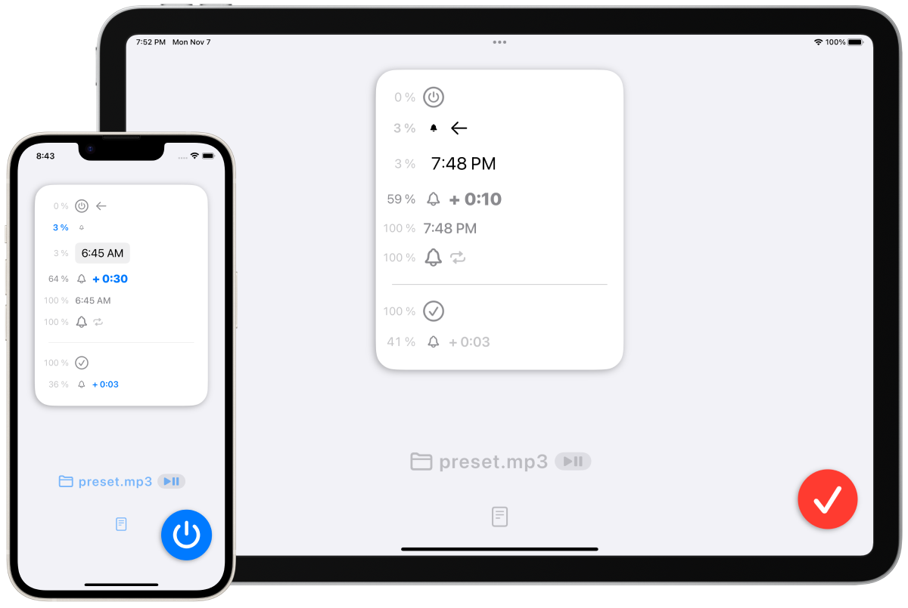

FadeInAlarm
Приложение для будильника со звуком, который постепенно становится громче с течением времени



Обзор.
Это приложение для iPhone и iPad позволяет узнать время по вашему выбору, постепенно увеличивая громкость сигнала с течением времени, в то время как обычные приложения-будильники подают громкий предупреждающий сигнал с большей силой.
Вы можете постепенно увеличивать громкость сигнала в течение длительного периода времени, от десятков секунд до десятков минут.
Это рекомендуется для людей, которых напрягает звук обычного будильника, или для тех, кто хочет знать о заданном времени через приблизительный промежуток времени, а не в определенный момент времени.
Опции.
Время затухания
- 10 сек.
- 30 сек.
- 1 мин
- 5 мин
- 30 минут
- 1 час
Время затухания
- 3 сек.
- 7 сек.
- 15 сек.
- 30 сек.
- 1 мин.
Громкость в режиме ожидания
-
10%
-
5%
-
3%
-
1%
- 0% (молчание)
Последовательность операций
- При нажатии кнопки запуска приложение начинает воспроизводить звук будильника с очень низкой громкостью (или без звука).
- Приложение будет продолжать воспроизводить звук будильника несколько раз, пока пользователь не нажмет кнопку "Стоп".
- В заданное время громкость постепенно увеличивается и достигает полной громкости через заданный пользователем промежуток времени (от десятков секунд до десятков минут).
- При нажатии кнопки Stop громкость будет постепенно уменьшаться с заданными пользователем интервалами (от нескольких секунд до минуты). Приложение прекращает воспроизведение звука будильника при наступлении полной тишины.
Демонстрационное видео.
Примечания.
Вам необходимо подготовить собственные звуковые файлы!
Пожалуйста, импортируйте звуковые файлы (например, mp3), подготовленные самим пользователем.
Звуковые данные предварительно установлены в приложении для целей тестирования.
Это приложение более неудобно, чем обычные приложения для будильников!
По разным причинам это приложение отличается от обычных приложений-будильников тем, что оно не может подать сигнал тревоги, когда само приложение вообще не запущено. Предварительно необходимо запустить приложение.
Например, если вы хотите использовать это приложение в 6 утра для будильника, запустите приложение непосредственно перед сном и нажмите кнопку запуска.
Существуют также ограничения в режиме ожидания!
Вы можете заблокировать устройство или использовать другие приложения в режиме ожидания, но нужно быть немного осторожным, чтобы не прервать режим ожидания будильника.
- Состояние ожидания тревоги прерывается в следующих ситуациях.
- Ситуации, когда вы смотрите длинные видео в других приложениях.
- Ситуации, когда вы воспроизводите песню в музыкальном приложении устройства
- Состояние ожидания тревоги прерывается в следующих ситуациях, но автоматически возобновляется
- Ситуации, в которых используется приложение камеры
- Сценарии, в которых звук генерируется каким-либо системным уведомлением.
Технические характеристики
Цена
160 йен
Покупка в приложении
Нет
Платформы
- iOS 15.2 или более поздней версии
- iPadOS 15.2 или более поздней версии